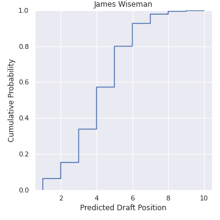

James Wiseman¶

Stats¶
N/A - the dude played 3 NCAA games
Scouting¶
Strengths
Length/Frame: I imagine Wiseman was considered an NBA prospect in the cradle. Elite size and proportions. Supposedly 235 lbs now, but he probably adds 20 pounds of muscle in the first few years of his career.
Speed/Fluidity: He moves like the proverbial gazelle up and down the court. I’m not sure how teams will be able to stop him in transition. Just hope for the best.
Lob target/Finishing: Throw the ball anywhere near the rim and Wiseman will probably have a play.
Rim protection: Should be one of the better rim protectors in the league early in his career.
Weaknesses
Shooting: Basically an unknown although his stroke looks decent from what I’ve seen. It’s not out of the question he eventually shoots a little.
Quickness: Fast up and down the court once he gets going, but more average lateral athlete. Will need to use his length to make up for this.
Playmaking: It’s not great right now.
Mentality: 20 or 30 years ago Wiseman would have easily been a #1 pick, and teams would feed him the ball in the post 30 times a game. Is Wiseman built mentally for today’s big man game? His skill level is closer to DeAndre Jordan, Steven Adams, and Dwight Howard then Embiid, KAT, Ayton or Bam. Who does he see himself as?
Draft Range¶
Sentiment¶
Realistic ceiling for James Wiseman?
— Aleksej Rhymes with Sergei (@thecity2) July 19, 2020